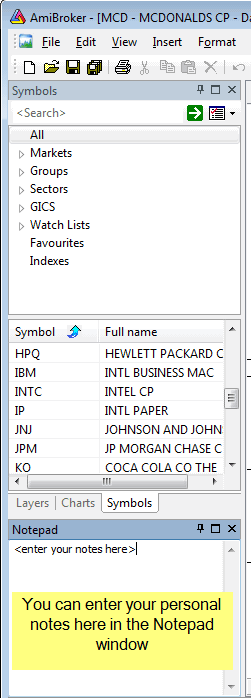

Notepad window (that you can show/hide using Window->Notepad menu)
that allows you to store free-text notes about a particular security. Just
type any
text
and
it will
be automatically
saved/read back as you browse through symbols. Notes are global and
are saved in the "Notes" subfolder as ordinary Notes can also be read and written to using AFL language NoteGet and NoteSet functions.
If you overwrite the note from the AFL level that is opened at the same time in the Notepad editor, the editor will ask you (when you switch the focus to it) if it should reload the new text or allow you to save your manually entered text. Example:
|
 |